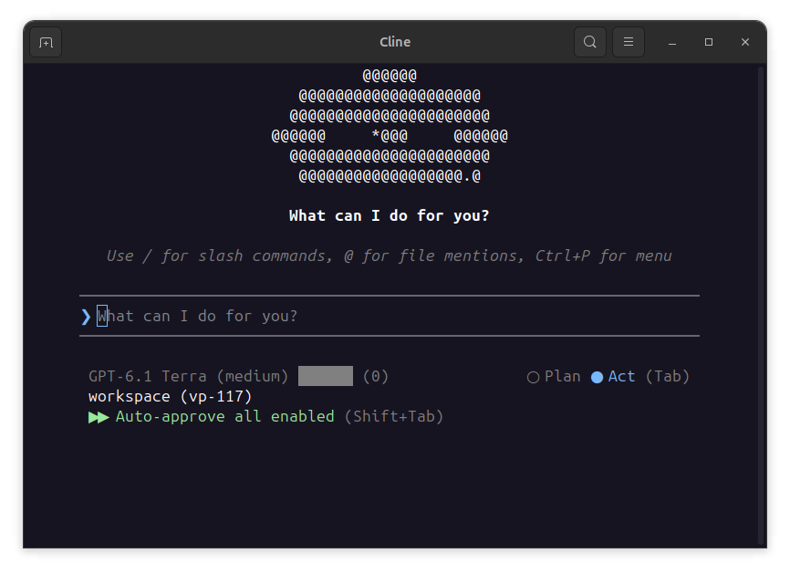
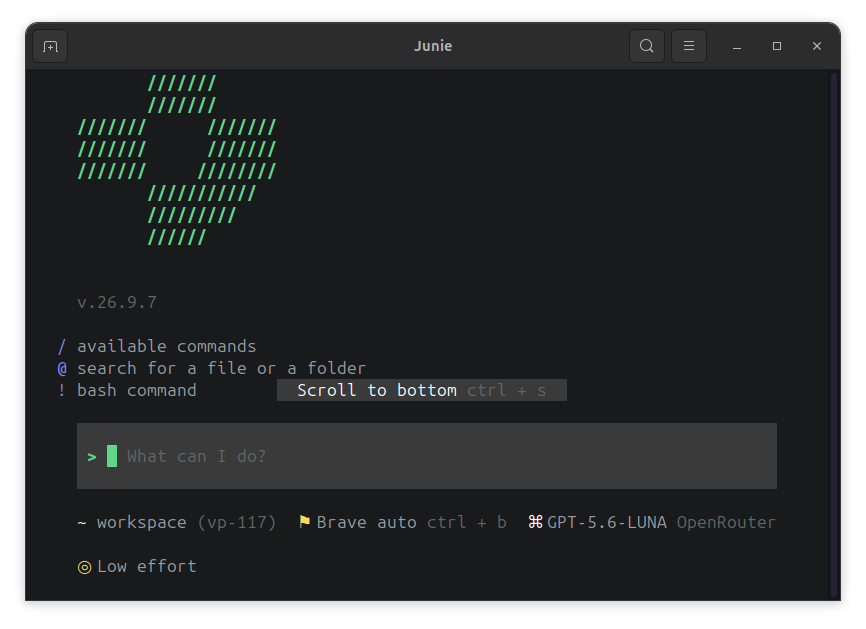
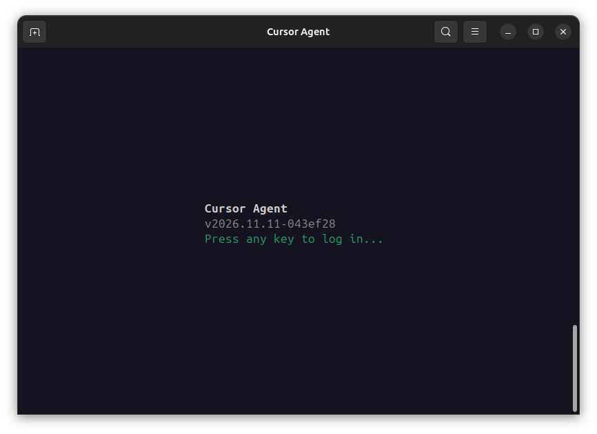
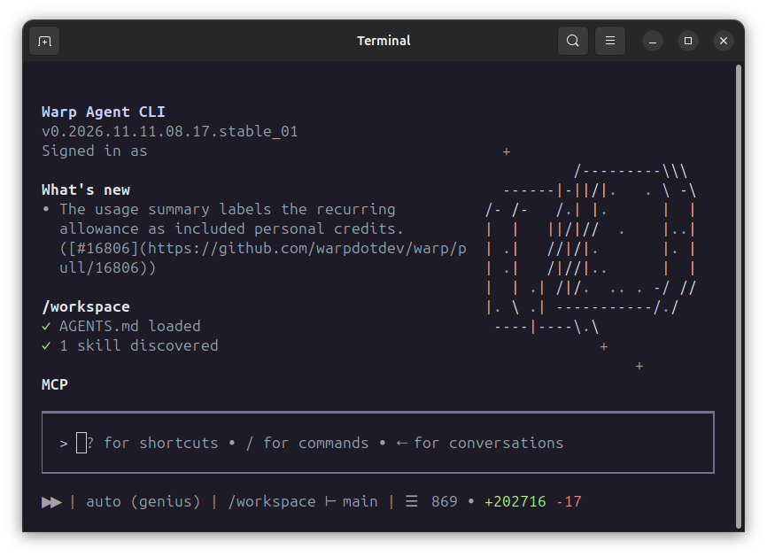

Four new agents
vp run now starts nineteen agents. Each of the four new ones runs
from an image that pins one release and switches off the agent's self-update, and
keeps its state under ~/.config/vibepod/agents/<agent>/, so a
login outlives the container.
Cline
vp run cline, or vp cl, starts Cline CLI, the
terminal edition of the Cline coding agent. It shares its agent core with the VS
Code extension: plan and act modes, MCP servers, rules, skills and checkpoints.
vp run cline -- auth opens the setup for a Cline account, a ChatGPT
subscription or your own API key, and the choice is kept in the config mount.
Tasks always run in act mode, because a task left in plan mode would never edit
a file.

Junie
vp run junie, or vp ju, starts Junie, the
LLM-agnostic coding agent from JetBrains. Log in with your JetBrains account from
the TUI, or set JUNIE_API_KEY, which also works for tasks, where
there is no TUI. With your own keys, Junie talks to Anthropic, OpenAI, Google,
Grok, OpenRouter or a LiteLLM proxy. Junie's bundled Java runtime ignores
SSL_CERT_FILE, so the image imports the proxy's CA into the
runtime's trust store and Junie's HTTPS calls pass through vibepod-proxy.

--ikwid turns on.Cursor
vp run cursor, or vp cu, starts Cursor CLI, the
terminal agent from the makers of the Cursor editor. Models come through your
Cursor account. Log in once with
vp run cursor -e NO_OPEN_BROWSER=1 -- login and open the printed URL
in the browser on your host, or set CURSOR_API_KEY. A detached task
cannot answer Cursor's workspace-trust prompt, so task mode marks the workspace
as trusted; command approvals stay in place unless you add
--ikwid. Cursor talks to its backend over long-lived HTTP/2 streams,
which vibepod-proxy 0.6.0 passes through instead of buffering, so this release
requires that proxy version.

Warp
vp run warp, or vp w, starts the Warp Agent CLI,
which runs the agent from the Warp terminal app in any terminal. On the first
start it shows a verification link and a code; open the link in the browser on
your host, or set WARP_API_KEY to skip the login. Warp keeps its
login only in a system keyring, which a container does not have, so the image
starts a private one with its files on the config mount, and the login is
remembered across runs. Warp is interactive only: it takes no prompt argument and
has no ACP server, so vp task create warp and --acp are
not available.

AGENTS.md and a skill loaded.Tasks, editors and skills
Cline, Junie and Cursor also run as background tasks, and inside your editor
with --acp, which now covers fourteen agents:
vp task create cline "fix the failing test" --ikwid
vp task create junie "summarize the README"
vp task create cursor "summarize the README"Skills installed with vp skills are mounted for all four. Each of
them brings its own model setup, so VibePod's llm settings and
--provider do not apply to them.
Bring the setup you already have
vp import copies an agent's configuration from your home directory
into a VibePod profile, mapped to the paths the agent reads inside its container:
settings, custom models, MCP servers, hooks, skills and memory files. Credentials
and session history stay behind unless you opt in:
vp import # scan your home directory for installed agents
vp import claude --dry-run # resolve the plan, write nothing
vp import claude --to-profile work --create-profile
vp import claude --with-credentialsWith --from-profile, the same command copies one profile's agent
configuration into another.
Mounts at host paths
A single absolute path is now enough to mount a directory at the same place in
the container: vp run claude -v /srv/datasets. For tools and configs
that refer to absolute project paths, --workspace-system-path mounts
the workspace at its host path as well as at /workspace. On
SELinux-enforcing hosts such as Fedora, VibePod prints a hint when its bind mounts
keep a label that containers may not access, and selinux_relabel: true
opts in to relabeling the mounts VibePod owns. Relabeling is permanent, so read the
SELinux notes first.
Smaller additions
vp skills exportcopies installed skills out as plainSKILL.mdfolders, so you can commit them to a repository or hand them to someone else.- A provider with an API key can use a plain
http://endpoint after an explicit opt-in, for LAN servers such asllama-server --api-key. The opt-in stays in your local configuration and is not part of a provider export. - Session and task records keep the image tag, the image ID and the agent version, so you can tell later which build did a run.
- Python 3.15 is tested and declared, and the docs cover
uv tool install vibepod. - The docs have new pages on external tools (LiteLLM, Headroom, RTK, Graphify) and on adding an agent, and describe how to keep Claude's project memory in the repository.
Fixes
- macOS: an agent started inside a herdr pane no longer fails to launch. The herdr socket cannot be bind-mounted off Linux, and VibePod now skips that mount on every engine there, Docker Desktop and Colima as well as Podman machine.
- Rootless Podman: Hermes starts. Earlier releases rejected the launch; VibePod now maps your host user onto Hermes's runtime user, so the files in your workspace stay yours. This needs Podman 4.3 or newer.
- Native Windows: attaching to an agent and
--acpwork over the named pipes of Docker Desktop and Podman Desktop, where they crashed before, and keystrokes are no longer doubled. A few keys do not reach the agent yet; see the Windows notes. - Pi tasks:
vp task create piworks. Pi runs in its JSON mode, and tasks trust the project's local files unless you have chosen a trust setting yourself.
In testing: board automation
Board automation and its review workers ship with 0.25.0, but they are still in testing, and commands and options may still change.
vp board work connects VibePod to a
vibepod-board
project. It claims the next planned task whose dependencies are done, checks the
task's branch out in a clone next to your repository, and runs the agent headless
in that clone with the task as its prompt. An optional verify command, such as
the test suite, has to pass before the task moves to Review:
vp config allow-dir ~/src/app # once per repository
vp board work VP --agent claude \
--repo ~/src/app \
--verify "python -m pytest -q" \
--ikwidEvery run adds a report to its task: the agent's summary, its commits, the
verify output and the duration. An agent that finds a task unclear asks instead of
guessing: the task is blocked with the question on its card, and the next run gets
the answer in its prompt. With --poll 2m the worker waits for new
tasks instead of exiting. The board token is never passed to the agent's
container.
Review workers and the pull request
Started with --mode review, a worker takes the tasks in Review
instead and decides whether each one needs rework or is ready for its pull
request. Several reviewers, with different agents, can review the same task.
Feedback reaches the implementing agent in its next prompt, and the rework
continues on the same branch:
vp board work VP --agent codex --repo ~/src/app --poll 2m
vp board work VP --agent claude --repo ~/src/app --poll 2m --mode reviewWorkers commit on local branches. Once a task has the approvals it needs, the
approving worker pushes the commit it approved to the task's branch on GitHub, and
Open PR on the board is prefilled with the title and description
the implementing agent suggested. A push is never forced, uses the git credentials
of the user the worker runs as, and can be turned off with
--no-push.
Upgrading
python -m pip install --upgrade vibepod
docker pull vibepod/proxy:latestProxied runs need vibepod-proxy 0.6.0 or newer. VibePod pulls the proxy image
only when it is missing, so pull it once if you already have an older one, with
docker or podman. If a proxy is still running, stop it
with vp proxy stop first. Mistral's agent is now called
vibe; vp run devstral, existing
agents.devstral configuration and VP_IMAGE_DEVSTRAL keep
working. Session and task databases are migrated on first use.
Release details
- New agents
cline,junie,cursorandwarp. - New
vp importfor host agent setups and profile-to-profile copies. - Same-path volume shorthand,
vp run --workspace-system-pathand opt-in SELinux relabeling. - New
vp skills exportcopies installed skills out as plainSKILL.mdfolders. - A provider with an API key can use a plain
http://endpoint after an explicit opt-in. - Session and task records keep the image tag, the image ID and the agent version.
- The herdr socket mount is skipped on every container engine off Linux.
- Hermes runs on rootless Podman.
- On native Windows, attaching to an agent and
--acpwork over named pipes. vp task create piworks: Pi runs in its JSON mode.- vibepod-proxy 0.6.0 or newer is required. A custom proxy image needs the label
io.vibepod.proxy.version. - Python 3.15 is tested and declared, and the docs cover
uv tool install vibepod. - New docs pages: external tools (LiteLLM, Headroom, RTK, Graphify) and adding an agent.
- In testing:
vp board workwith implementing and reviewing workers, configured underboard:or withVP_BOARD_URLandVP_BOARD_TOKEN. - Thanks to @janpipek (SELinux relabeling), @ReimarBauer (Windows attach), @sguter90 (profile docs) and @Qrytics (proxy policy validation) for their contributions.